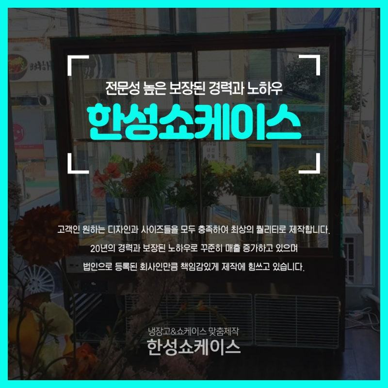
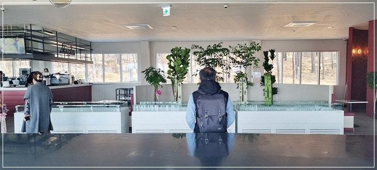

오픈쇼케이스
오픈쇼케이스 온도, 설정값보다 선반 앞쪽을 보세요

오픈쇼케이스의 적정 온도는 음료, 샐러드, 유제품처럼 진열 상품에 따라 다르기 때문에 한 가지 숫자로 정하기 어렵고, 상품 기준에 맞춰 설정하시면 됩니다. 중요한 것은 표시창 숫자가 아니라 손님이 집어 가는 선반 앞쪽 온도이며, 이 온도는 에어커튼을 막는 진열, 매장 바람, 성에 상태에 따라 크게 달라집니다.
안녕하세요. 편의점, 마트, 샐러드·음료 매장에 들어가는 오픈쇼케이스를 맞춤 제작하는 한성쇼케이스입니다.
오픈쇼케이스를 쓰시는 사장님들께 가장 자주 받는 질문 중 하나가 몇 도로 맞춰야 하느냐는 것입니다. 그런데 막상 매장에 가 보면 설정값은 적당한데 앞줄 상품이 미지근하다는 경우가 훨씬 많습니다.
오픈쇼케이스는 앞면에 문이 없고 위에서 내려오는 찬 공기의 막, 즉 에어커튼으로 냉기를 지키는 구조입니다.
그래서 같은 설정 온도라도 진열 방식과 매장 환경에 따라 실제 온도가 크게 달라집니다.
오늘은 오픈쇼케이스 온도를 정하는 기준과, 설정값대로 온도가 나오지 않을 때 확인할 부분을 정리해 보겠습니다.
1. 설정 온도는 상품 기준으로
음료와 캔류, 포장 샐러드, 우유와 요거트, 가공 육류는 권장 보관 온도가 서로 다릅니다. 한 대에 여러 상품을 함께 진열한다면 가장 예민한 상품을 기준으로 맞추고, 상품 포장에 적힌 보관 조건을 먼저 확인해 보세요.
상품군이 크게 다르다면 한 대에 다 넣기보다 칸이나 장비를 나누는 편이 관리가 쉽습니다. 음료는 조금 덜 차가워도 괜찮지만 유제품이나 샐러드는 온도가 오르면 판매 기간이 짧아지기 때문입니다.
- 진열 상품의 포장 보관 조건을 확인하세요.
- 가장 예민한 상품을 기준으로 설정하세요.
2. 표시창이 아니라 선반 앞쪽을 재기
컨트롤러가 보여 주는 온도는 센서가 달린 한 지점의 값입니다. 오픈쇼케이스는 안쪽보다 손님 쪽 앞줄이 더 따뜻해지기 쉬워서, 표시값만 믿으면 실제 상품 온도를 놓치게 됩니다.
선반 앞쪽 상품 사이에 온도계를 두고 영업 중 몇 차례 확인해 보세요. 아침, 손님이 몰리는 시간, 마감 전처럼 시간대를 나눠 보면 어느 때 온도가 오르는지 감이 잡힙니다.


3. 에어커튼을 막는 진열과 매장 바람
상품을 선반 끝보다 앞으로 내밀어 쌓거나, 최상단 토출구 앞까지 꽉 채우면 위에서 내려오는 냉기 막이 끊깁니다.
이때 찬 공기는 바닥으로 새고 따뜻한 매장 공기가 그대로 들어와 앞줄 온도가 올라갑니다.
매장 에어컨이나 출입문 바람이 쇼케이스 정면으로 불어오는 자리도 같은 문제를 만듭니다. 햇빛이 드는 창가도 피하는 것이 좋고, 위치를 바꾸기 어렵다면 에어컨 바람 방향만 돌려도 차이가 납니다.
- 선반 끝선을 넘겨 진열하지 마세요.
- 상단 토출구와 하단 흡입구를 막지 마세요.
- 에어컨·출입문 바람 방향을 확인하세요.
4. 영업 후 나이트커버와 성에 관리
영업이 끝나면 나이트커버를 내려 냉기 손실을 막아 주세요. 밤새 덮개 없이 두면 온도를 유지하느라 기계가 계속 돌아가고, 다음 날 아침 상품 온도도 불안정해집니다.
증발기에 성에가 두껍게 쌓이면 냉기가 제대로 나오지 못해 설정값을 낮춰도 온도가 내려가지 않습니다. 이럴 때 온도만 더 낮추면 성에가 더 쌓이는 악순환이 생기니, 성에 상태를 먼저 확인하시는 게 순서입니다.
체크리스트
- 상품 보관 조건 기준 설정
- 선반 앞쪽 실제 온도 측정
- 선반 끝선·토출구 막힘 여부
- 에어컨·출입문 바람 방향
- 영업 후 나이트커버 사용
- 증발기 성에 상태
현장에서 자주 보는 경우: 성에 때문에 온도가 안 맞는 오픈쇼케이스
온도를 아무리 낮춰도 시원해지지 않는다는 매장에 가 보면 내부에 성에가 두껍게 쌓여 있는 경우가 많습니다.
성에가 1cm 정도만 쌓여도 전력 낭비가 커지고 고장과 수명 단축의 원인이 될 수 있습니다. 성에는 바깥에서 들어온 습기가 얼면서 생기고, 포장하지 않은 식품에서 빠져나온 수분도 원인이 됩니다.
제거는 영업이 끝난 뒤 전원을 끄고 상품을 모두 꺼낸 다음 진행합니다. 성에가 어느 정도 녹으면 끝이 뾰족하지 않은 도구로 살살 밀어 떼어 내고, 칼이나 송곳은 내부를 손상시킬 수 있으니 쓰지 않습니다.
예방하려면 식품을 밀폐해 진열하고 고무 패킹 같은 부품이 닳지 않았는지 정기적으로 살펴보세요.




자주 묻는 질문
오픈쇼케이스 온도를 최대한 낮추면 더 안전하지 않나요?
너무 낮추면 성에가 빨리 쌓이고 전기 사용도 늘어납니다. 상품 보관 조건에 맞춰 설정하고 선반 앞쪽 온도를 확인하는 편이 더 안정적입니다.
오후만 되면 앞줄 상품이 미지근해요.
손님이 몰리는 시간에 진열이 앞으로 밀려 나오거나 매장 냉방 바람이 정면으로 부는 경우가 많습니다. 진열 끝선과 바람 방향을 먼저 점검해 보세요.
점검을 받아야 하는 경우는 언제인가요?
진열과 성에를 정리했는데도 온도가 내려가지 않는다면 냉각 계통 점검이 필요합니다. 대표전화 031-986-2458로 증상을 알려 주시면 전국 240여 개 A/S 센터에서 지원합니다.
매장 조건에 맞춰 만드는 한성쇼케이스
원하시는 제품 사진과 설치할 공간 사진만 보내 주셔도 매장에 맞는 구성을 추천해 드립니다.
- 전국 240여 개 A/S 전담 센터 운영
- 본사 대량 자재 매입으로 품질 대비 합리적인 가격
- 유럽제·삼성 냉각 콤프레셔 적용
- 국내 최초 쇼케이스 전문 디자이너 상주
매장 폭과 원하는 진열 구성을 알려 주세요. 실측과 견적을 안내해 드립니다.
031-986-2458